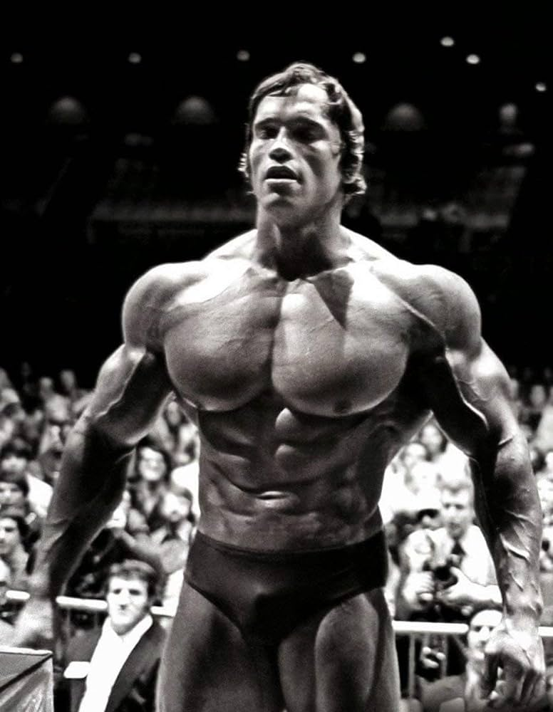

5×5 Fitness Antrenman Programı
5×5 Full Body Antrenman Programı, en hızlı kas yapma, yağ yakma ve vücut geliştirme sonuçlarını
sağladığı için EMRE GYM’in ve Türkiye’nin en çok uygulanan programlarından biri haline geldi.
Yüz binden fazla sporcu 5×5’i uyguladı ve onlarcası her gün nasıl sandığından çok daha iyi sonuç
aldığını bize sosyal medya hesaplarımızdan yazıyor

Bu programa başlarken egzersizleri nasıl yapacağınızı bilmeyebilirsiniz, hatta bu bileşik egzersizlerden
korkabilirsiniz. Fakat videolarımızdaki akışı izlediğinizde, egzersizlerin herkes tarafından
yapılabilecek bir varyasyonu olduğunu göreceksiniz. Örneğin Deadlift yerine Romanian Deadlift (RDL),
Squat yerine Goblet Squat yaparak güvenli şekilde hareketi öğrenebilirsiniz.
5×5 Açıklamaları
5×5 Güvenli Mi?

5×5 size makinelerden daha zor gibi gelebilir, fakat önemli olan temel egzersizleri serbest ağırlıklarla
verimli şekilde öğrenerek spora başlamaktır.
Eğer uzun süre bu egzersizleri güvenlik sebebiyle ertelediyseniz, hala birçok donanımdan eksiksiniz
demektir. Dolayısıyla hala yeni başlamış sayılırsınız. Makineler bize öğretmez, yalnızca hatalarımızı
yokmuş gibi gösterir. Bu da daha tehlikelidir.
5×5 Kas Yapar Mı?
Bir full body antrenman olması ve makinelerin çok az olması, genel olarak insanları bu endişeye itiyor.
Bu endişelerin birçoğu, ne yazık ki bilinçsiz antrenörlerin yanlış yönlendirmeleri nedeniyle sizin
aklınızı karıştırabilir.
5×5 bir full body antrenman programıdır. Full body çalışmak, temel egzersizlere odaklanmak yeni başlayan
biri için daha verimlidir. Bu şekilde en hızlı ilerlemeyi kat edeceğinize inanıyoruz, 5×5 de tüm dünyada
bu yüzden popüler oldu.
5×5 antrenman programı, progressive overload sağlayabilmek için en verimli program. Dolayısıyla evet,
kas geliştirirsiniz.